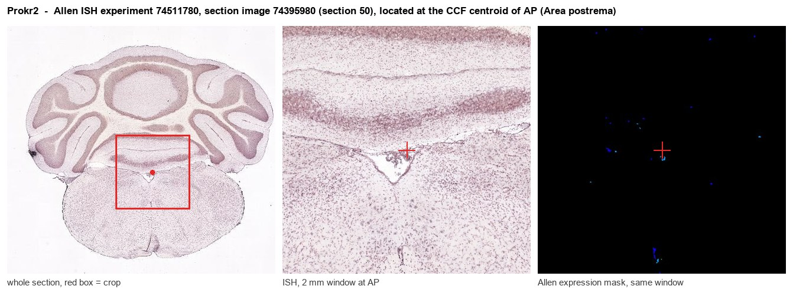
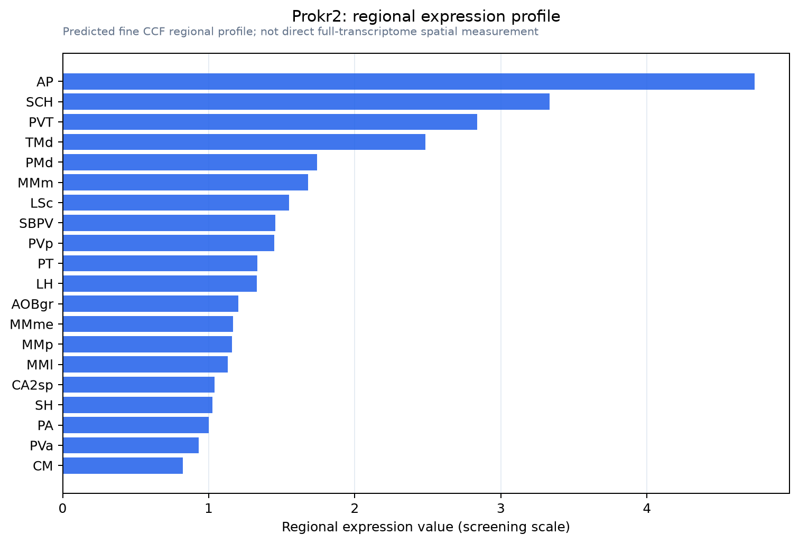

Prokr2
Prokineticin receptor 2 (PK-R2) (G protein-coupled receptor 73-like 1)
Spatial tier: RESTRICTED · Class: GPCR · Top region: AP (Area postrema) · Positive regions: 15/554
46.2Discovery Score
43.5Targetability Score
CEvidence grade C
What this means: Prokr2: fine CCF profile is restricted toward AP (top regions: AP, SCH, PVT, TMd, PMd; 15 positive regions); direct spatial validation is still required.
Function in AP: evidence, prediction, innovation
- Gene function
- PROKR2 (PKR2) is a class A G-protein-coupled receptor for the secreted peptide prokineticin-2. It couples mainly to Gq, raising intracellular calcium, and also to Gi. Prokineticin-2 is a major diffusible output signal of the suprachiasmatic clock, and PROKR2 additionally guides olfactory bulb morphogenesis and GnRH neuron migration; loss-of-function mutations in humans cause Kallmann syndrome with hypogonadotropic hypogonadism.
- Region function
- The area postrema is a circumventricular organ on the floor of the fourth ventricle with fenestrated capillaries and no blood-brain barrier; it samples circulating toxins, hormones and peptides and drives nausea, conditioned taste avoidance and suppression of feeding through the NTS and parabrachial nucleus.
- Published in this region
- expression only Expression is well documented, function is not. Cheng et al. 2006 found prominent Prokr2 mRNA in circumventricular organs including the area postrema in their in situ survey of adult mouse brain, and Mohsen et al. 2017, using a Prokr2-Cre reporter, confirmed a high density of labelled cells in the subfornical organ, subcommissural organ and area postrema. No study has manipulated PROKR2 within the area postrema.
- Predicted function
- Prediction: AP PROKR2 neurons are well placed to let the circadian prokineticin-2 signal, and prokineticin arriving from the circulation, gate the sensitivity of the nausea and satiety pathway across the day. Chemogenetic activation of AP Prokr2-Cre neurons should suppress food intake and induce conditioned taste avoidance with Fos in NTS and parabrachial nucleus; conditional deletion of Prokr2 in AP should flatten the circadian variation in emetic and anorectic responses to peripheral challenges while leaving circadian locomotor rhythm intact.
- Innovation
- ★★★★☆ 4/5 A Cre line already labels these AP cells and expression is documented, yet nobody has asked what PROKR2 signalling does in this nucleus.
- Tools
- Prokr2-Cre (Mohsen et al. 2017) and Prokr2-null mice; prokineticin-2 peptide; PKR antagonists PC-7 and PKRA7; anti-PROKR2 antibodies. AP is reachable by fourth-ventricle or direct stereotaxic AAV.
- References
Direct evidence located at the region

Allen ISH experiment 74511780, section image 74395980 (section 50): the section that contains the CCF centroid of Area postrema according to the Allen image-to-atlas alignment (reference_to_image), with a 2 mm window around that point. Left: whole section, red box = window. Middle: ISH signal. Right: Allen's expression-mask view of the same window. open this image in the Allen viewer
Look it up yourself: Allen Mouse Brain ISH for Prokr2Allen reference atlas: AP (structure 207)ABC Atlas MERFISH viewer(in the ABC Atlas choose dataset MERFISH-C57BL6J-638850-CCF, colour cells by gene "Prokr2" or by parcellation_substructure "AP")All genes confined to AP + 3-D brain
Direct spatial evidence
MERFISH REGION LOCATOR

Regional expression figure

Predicted WMB × fine-CCF profile; not direct full-transcriptome spatial measurement.
Spatial profile
Evidence and specificity
- Evidence status
- PREDICTED_FINE
- Direct sources
- None; predicted localization only
- Exclusive threshold
- 12 positive regions out of 554
- Spatial specificity
- 0.354
- Top-region fraction
- 0.093
- Filter status
- PASS
Interpretation limits
- Cell-type-to-region projection is imputed expression, not direct spatial measurement.
- Adult reference atlases do not establish stability across age, sex, strain, state, or disease.
- Transcript abundance does not guarantee protein abundance or genetic-tool performance.